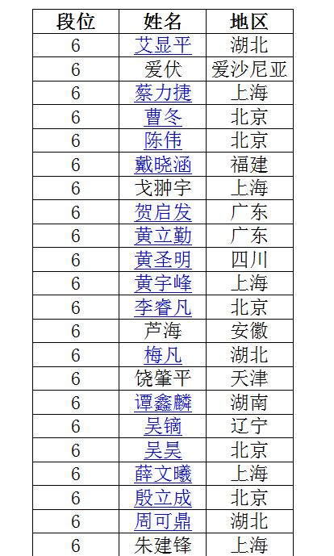
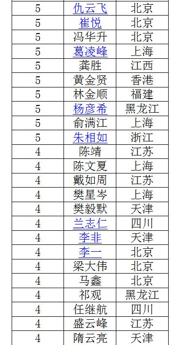
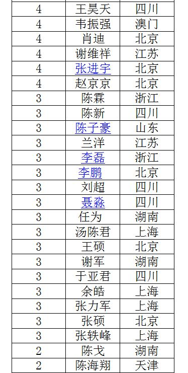
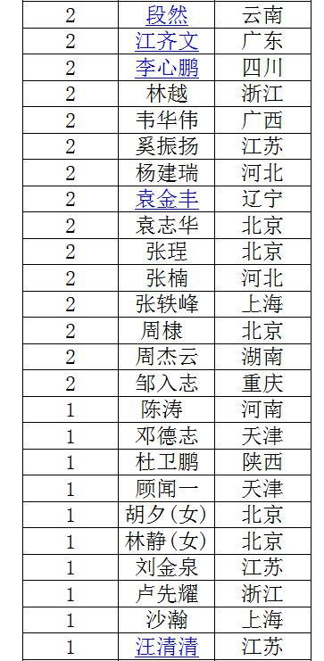
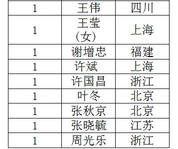

想制作国内五子棋比赛的视频讲解视频，有些问题需要讨论一下。
#1 想制作国内五子棋比赛的视频讲解视频，有些问题需要讨论一下。 作者：高飞 发表时间：2011-7-20 9:32:41
到现在为止，国内的五子棋比赛的影响力似乎还是一个比较小的范围的影响，而书籍和视频上关于国内五子棋的比赛似乎是一片空白，
想制作国内五子棋比赛的视频讲解视频系列，但是有些问题不是很好解决。
第一点，关于棋手介绍，最近爱五子棋在整理这些，是个比较不错的方法，但觉得似乎还需要正规些，
比如，国家级别赛事成绩，省级赛事成绩，还有小范围比赛成绩，有个主次规范。
还有段位问题，如果做视频介绍，有人RIF有七，八段，中国棋院段位比较低，而有的人只有中国棋院的段位或RIF段位，应该介绍哪一个，如果介绍，肯定只能介绍一个。
如果介绍不好，似乎会影响很大。
第二点，关于视频制作中棋手对局问题，讲解某棋手的比赛对局，棋手有没有权利不允许我制作关于某人有关的比赛权利。
第三点，希望大家推荐一些好的对局，这些有助制作中视频的对局质量。
这三点，最大问题是第一点，这个是比较纠结，也是五子棋里比较敏感的问题，我个人很难决定这个。
希望大家给予意见。
［此帖子已被 高飞 在 2011-7-20 9:43:07 编辑过］
［ Type 于 2011-7-20 9:51:33 时花20金币送鲜花一朵］
［ 第五象限 于 2011-7-20 10:01:21 时花20金币送鲜花一朵］
［ 隐藏菜系 于 2011-7-20 15:44:13 时花20金币送鲜花一朵］
［ 清缘 于 2011-7-20 18:06:33 时花20金币送鲜花一朵］
［ 黄药师 于 2011-7-20 21:09:46 时花20金币送鲜花一朵］
#2 Re:想制作国内五子棋比赛的视频讲解视频，有些问题需要讨论一下。 作者：高飞 发表时间：2011-7-20 10:03:09
我觉得你的观点是可以这么考虑，但似乎很多段位都不好说，介绍错了，会被人骂的。
拿曹冬来说，介绍是为职业6段还是职业八段。
还有，中国没有正式点的中国棋院式的棋手资料档案。
这是个很大的麻烦，不然我介绍出来，有人有责问，你所介绍的东西出自哪里？似乎没有依据
再一点，棋手有权利要求不允许做关于自己对局有关的视频吗？
#3 Re:想制作国内五子棋比赛的视频讲解视频，有些问题需要讨论一下。 作者：高飞 发表时间：2011-7-20 10:30:05
有时候是不好说的~~不是自己认为就可以，主要是有没有这方面的规定，如果有规定，就没有疑问，
如果没有规定，那就应该做一个棋手意愿的统计，我就只做愿意的这部分人的视频
#4 Re:想制作国内五子棋比赛的视频讲解视频，有些问题需要讨论一下。 作者：高飞 发表时间：2011-7-20 10:46:34
就像最近爱五子棋里编辑的，你的故事里 曹冬也是被只提RIF八段，从这个方面说，我没有他是中国棋院的6段的依据。
我很纠结，中国的五子棋段位制度，似乎也是五子棋里一个难以解决的问题。
而且还有，哪些人已经拿到段位证，哪些没有拿，如果没有拿，有拿的资格，是不代表有段位的吧！！
很纠结！！！
#5 Re:想制作国内五子棋比赛的视频讲解视频，有些问题需要讨论一下。 作者：非黑既白 发表时间：2011-7-20 10:47:48
不知道这个是不是目前为止最后的段位情况





#6 Re:想制作国内五子棋比赛的视频讲解视频，有些问题需要讨论一下。 作者：高飞 发表时间：2011-7-20 10:51:55
不确定，是申请段位才有段的，并不是取得过成绩就是有段的。
#7 Re:想制作国内五子棋比赛的视频讲解视频，有些问题需要讨论一下。 作者：怪 发表时间：2011-7-20 11:09:41
要申请才能有段位的。
其实可以不用介绍段位的，既然能够选出来讲解的，关键还是看对局质量了，而不是其他的，介绍个名字就足够了吧？
#8 Re:想制作国内五子棋比赛的视频讲解视频，有些问题需要讨论一下。 作者：非黑既白 发表时间：2011-7-20 11:16:51
我以为，其实段位只是一种荣誉，相信没有多少人会觉得，3段的就一定下不过6段的。更何况还存在很多世外高人，他们根本就没有去申请段位。#9 Re:想制作国内五子棋比赛的视频讲解视频，有些问题需要讨论一下。 作者：高飞 发表时间：2011-7-20 11:21:28
做视频，不是为了我们这一小圈的人，目的是为了五子棋的宣传，扩大五子棋的影响，改变我们这圈外人看完视频后对国内五子棋的认识。
对于段位，和赛事的介绍这些都不重要，那五子棋重要的只是我们这么些人自娱自乐吗？
我觉得五子棋应该有个规范起来，不要给外人看起来一团乱沙。
现在五子棋圈外人对五子棋是什么看法，一直都没改变，都是有一定的原因的。
［此帖子已被 高飞 在 2011-7-20 11:22:11 编辑过］
#10 Re:想制作国内五子棋比赛的视频讲解视频，有些问题需要讨论一下。 作者：非黑既白 发表时间：2011-7-20 11:36:36
多数人以为‘五子棋’不过是妇女和儿童的游戏，和‘飞行棋’、‘斗兽棋’差不多。很多人看到这里可能会骂我，但是你靠什么去转变公众的认可呢？ 没有统一的标准应当是其一。段位就是一个例子，老百姓不懂什么棋院段位和RIFCHINA是怎么个关系。
高飞的提议是正确的，用一把尺子来衡量，都讲中国棋院的段位或者RIF； 赛事也应当分国际、全国、省级、市级；文章也以这个等级标准。
我们都希望让更多人都来了解五子棋、认识五子棋、喜欢五子棋
［此帖子已被 非黑既白 在 2011-7-20 11:47:44 编辑过］
#11 Re:想制作国内五子棋比赛的视频讲解视频，有些问题需要讨论一下。 作者：怪 发表时间：2011-7-20 12:01:45
如果是为了给不了解五子棋的人介绍，还是介绍中国棋院的段位的好。弄个民间段位体系，本身一看就是混乱。如果要全部按照标准来做，rif段位是不被承认的，虽然rif段位一般比较高。
#12 Re:想制作国内五子棋比赛的视频讲解视频，有些问题需要讨论一下。 作者：高飞 发表时间：2011-7-20 12:07:16
我比较推荐“爱五子棋网”做一个棋手档案，用一个标准来做， 这样我可以照着这个档案来介绍棋手和赛事
［ wuxiao 于 2011-7-20 14:26:56 时花20金币送鲜花一朵］
［ 中中 于 2011-7-20 18:12:18 时花20金币送鲜花一朵］
#13 Re:想制作国内五子棋比赛的视频讲解视频，有些问题需要讨论一下。 作者：游戏人间 发表时间：2011-7-20 12:17:01
这个事情不用讨论吧。。。肯定是按照中国棋院的标准走。介绍的时候完全可以直接介绍某人的最好成绩，并声明属于什么段位档次的。。
比如我向来和别人介绍我是中国棋院6段棋手。。。难倒我还会去介绍我是RIF组织8段吗？（世界锦标赛冠军自动升8段）
我想不会有什么人出来乱质疑的。
#14 Re:想制作国内五子棋比赛的视频讲解视频，有些问题需要讨论一下。 作者：游戏人间 发表时间：2011-7-20 12:17:53
还有介绍棋局的问题。征得对局者本身同意是必须的。就好像版权一个道理。［ 絕版賭徒 于 2011-7-20 12:22:40 时花20金币送鲜花一朵］
#15 Re:想制作国内五子棋比赛的视频讲解视频，有些问题需要讨论一下。 作者：游戏人间 发表时间：2011-7-20 12:33:38
随意点评也不能按照自己的心意乱评吧？所以总得视线把评论的内容与对局者本身沟通下才好。。省的出现不和谐的因素。。。#16 Re:想制作国内五子棋比赛的视频讲解视频，有些问题需要讨论一下。 作者：非黑既白 发表时间：2011-7-20 13:02:58
事先沟通应当还是必要的吧，因为假若不了解棋手当时主观、客观的因素，诸如：有意和棋或者有意输棋、是否有当时身体状态、情绪等方面的因素，更主要的是行棋思路等因素，就妄加评述，显然是欠妥当的。#17 Re:Re:想制作国内五子棋比赛的视频讲解视频，有些问题需要讨论一下。 作者：非黑既白 发表时间：2011-7-20 13:05:32
引用：就是嘛，不然很多届外人士会疑惑，世界冠军才是6段，而某某是8段......
原文由 游戏人间 发表于 2011-7-20 12:17:01 :这个事情不用讨论吧。。。肯定是按照中国棋院的标准走。介绍的时候完全可以直接介绍某人的最好成绩，并声明属于什么段位档次的。。
比如我向来和别人介绍我是中国棋院6段棋手。。。难倒我还会去介绍我是RIF组织8段吗？（世界锦标赛冠军自动升8段）
我想不会有什么人出来乱质疑的。
#18 Re:想制作国内五子棋比赛的视频讲解视频，有些问题需要讨论一下。 作者：如火流年 发表时间：2011-7-20 13:22:39
段位如果能和工资挂钩，你们争一争还有价值。。。现在只不过是圈内人的一个虚衔，你们这么纠结干嘛？#19 Re:想制作国内五子棋比赛的视频讲解视频，有些问题需要讨论一下。 作者：如火流年 发表时间：2011-7-20 13:24:53
关于这个问题，高天师可以：1.介绍自己的对局，这样就解决了50%的介绍段位问题
2.只介绍此人最好成绩和地区，比如北京棋手曹冬，XXXX冠军，不介绍段位不就好了？
做视频是挺好的事，别被这些琐碎的事情耽搁了。
#20 Re:Re:Re:想制作国内五子棋比赛的视频讲解视频，有些问题需要讨论一下。 作者：非黑既白 发表时间：2011-7-20 13:30:02
引用：正确！没有规矩不能成方圆。规范、统一的标准是大家认可的前提
原文由 Type 发表于 2011-7-20 13:24:58 :要推广，首先要尽可能规范化。自己都不当回事，别人就更看轻你了。
#21 Re:想制作国内五子棋比赛的视频讲解视频，有些问题需要讨论一下。 作者：如火流年 发表时间：2011-7-20 13:32:03
回24楼，您是想推动规范化呢，还是想在规范化的进程中狠狠踹RIFCHINA这个民间组织一脚呢？另，关于棋谱版权问题，这个要看主办方的竞赛规程了，棋谱版权是归谁所有，由谁发布，发布协议是什么，是否允许转载修改和再发布。这个国内都还没有一定的规范。
所以建议高天师在点评之前先问问对局双方，和当时的赛事主办方。反正应该都是熟人，问题不大的。
#22 Re:想制作国内五子棋比赛的视频讲解视频，有些问题需要讨论一下。 作者：陈唯一 发表时间：2011-7-20 14:10:10
个人认为只要没规定的事都可以先做，开创先河。#23 Re:想制作国内五子棋比赛的视频讲解视频，有些问题需要讨论一下。 作者：高飞 发表时间：2011-7-20 14:13:57
总体说来：
第一点，段位都是比较支持用中国棋院的标准，但是我是依据什么来的，这个不能随意的说。
最好是建一个棋手档案，可以来规范中国五子棋的段位制度，我也可以参考做为标准。
如：曹冬，职业六段，全国级别比赛成绩或最好成绩。 如果由我做视频中随意的只说中国棋院的，是不是有一些曹冬迷会来攻击我呢？
第二点，关于版权，这个我不太懂，没有地方规定棋手有这个权利，也没有地方规定没有这个权利。
在使用中似乎没有发现棋手有这个权利，如：智力运动会，陈新讲解吴镝和我的对局，我比完了几天后才知道的。
还有，每次比赛完，棋谱都是封存，棋手没有权利要求看自己的棋谱，从这点看，棋手不存在权利。
所以我认为是不具备这个权利。
如果坚持说下棋的人具有自己下的棋有保护的权利，那至今到处都有刊登棋谱，刊登之前是不是和本人有联系。
但如果要提前通知某某人的话，那还是很麻烦的。就算我有提前通知某某人，哪天那位和某人有些不开心，那是不是可以要求我删掉视频呢？
这个版权可大可小，如果真赋予棋手权利的，很多网站都可以利用法律手段关闭。
#24 Re:想制作国内五子棋比赛的视频讲解视频，有些问题需要讨论一下。 作者：高飞 发表时间：2011-7-20 14:36:54
刚去参考法律，著作权法第三条：
第三条 本法所称的作品，包括以下列形式创作的文学、艺术和自然科学、社会科学、工程技术等作品:
（一）文字作品；
（二）口述作品；
（三）音乐、戏剧、曲艺、舞蹈、杂技艺术作品；
（四）美术、建筑作品；
（五）摄影作品；
（六）电影作品和以类似摄制电影的方法创作的作品；
（七）工程设计图、产品设计图、地图、示意图等图形作品和模型作品；
（八）计算机软件；
（九）法律、行政法规规定的其他作品
从这点可以看出，下棋的棋谱不具有著作权。所以做视频时，不需要告诉棋手我引用了他下的棋。希望以后不要产生纠纷。
至于每个人的名字，这个应该也不属于独有。只能说“引用名字”，比如这个介绍是我从网站上介绍而引用，似乎每个人都没有权利禁止别人引用自己的名字。
#25 Re:想制作国内五子棋比赛的视频讲解视频，有些问题需要讨论一下。 作者：絕版賭徒 发表时间：2011-7-20 15:24:37
删除，收回我的话
［此帖子已被 絕版賭徒 在 2011-7-20 15:28:48 编辑过］
#26 Re:想制作国内五子棋比赛的视频讲解视频，有些问题需要讨论一下。 作者：隐藏菜系 发表时间：2011-7-20 15:50:13
如果是单纯的棋评，我也觉得不用事先告知对局双方，就像有那么多写球评的，都很自由想写就写。
只是五子棋这个圈子比较小，评别人的棋，可能还需谨慎小心，态度友好，尽量客观地从技术角度去评论。。。
当然如果能和对局者进行沟通那就更好了。。。
PS：不过沟通多了也许就无法完全从自己的角度或者客观地去评了。。真矛盾。。。
［此帖子已被 隐藏菜系 在 2011-7-20 15:51:12 编辑过］
［此帖子已被 隐藏菜系 在 2011-7-20 15:52:22 编辑过］
#27 Re:想制作国内五子棋比赛的视频讲解视频，有些问题需要讨论一下。 作者：高飞 发表时间：2011-7-20 16:18:06
评棋肯定是从棋的角度去讲，除了在视频前面介绍一下对局者，后面的内容只和棋谱有关系。
其实我觉得最好是不要沟通，棋手不具有对棋谱的著作权，就不会有问题，这个要做到一个共识。
如果这个去沟通，就等于棋手有权利不让别人引用棋谱，这等于自己给自己找麻烦。
从法律上讲，棋手是没有著作权的。
所以这点，以后不会有太大的问题。
最关键的是要建立一个比较正规的棋手档案，
这点是现在五子棋里也紧缺的。
不能给一个棋手两个段位，只能留一个。做到以后大家都按这个规范。
作为棋手应该有两个成绩。1，要成绩或者最好成绩。2历史成绩。
这些都是要规范的东西，这样才不会给人一团乱的感觉。
有了这些档案，我就可以依照这些档案来介绍棋手，不然我给棋手介绍的东西是没有依据的。
做五子棋比赛视频是非常有必要的，
相信大家也知道，对于五子棋圈外的人，或者是刚入门的人。
有很多人爱看视频和书，但是书和视频里对国内的比赛介绍几乎是零。
所以我希望做这些能让国内的比赛情况给圈外人对五子棋的认识产生一些改变。
#28 Re:想制作国内五子棋比赛的视频讲解视频，有些问题需要讨论一下。 作者：岑小鱼 发表时间：2011-7-20 19:22:31
非商业用途的自然可以对任何对局评说....甚至直接对人进行评说.....当然了.后者或许起火..
商业用途的....具体规定没有去了解过...不过从生活中一些事情来看...似乎要看对局者与举办方签订的协议吧? 似乎是归于举办方的多.....
#29 Re:想制作国内五子棋比赛的视频讲解视频，有些问题需要讨论一下。 作者：高飞 发表时间：2011-7-20 19:27:14
这个属于公开型的视频，不是商业用途。
至于商业用途的话，引用棋谱倒是没有问题的。因为棋手不具有著作权。 但不用引用棋手名字。
这里最重要的是段位问题。我现在能唯一想到的，是在爱五子棋里，成立一个五子棋棋手档案。
#30 Re:Re:想制作国内五子棋比赛的视频讲解视频，有些问题需要讨论一下。 作者：岑小鱼 发表时间：2011-7-20 19:28:54
引用：
原文由 高飞 发表于 2011-7-20 14:36:54 :刚去参考法律，著作权法第三条：
第三条 本法所称的作品，包括以下列形式创作的文学、艺术和自然科学、社会科学、工程技术等作品:
（一）文字作品；
（二）口述作品；
（三）音乐、戏剧、曲艺、舞蹈、杂技艺术作品；
（四）美术、建筑作品；
（五）摄影作品；
（六）电影作品和以类似摄制电影的方法创作的作品；
（七）工程设计图、产品设计图、地图、示意图等图形作品和模型作品；
（八）计算机软件；
（九）法律、行政法规规定的其他作品从这点可以看出，下棋的棋谱不具有著作权。所以做视频时，不需要告诉棋手我引用了他下的棋。希望以后不要产生纠纷。
至于每个人的名字，这个应该也不属于独有。只能说“引用名字”，比如这个介绍是我从网站上介绍而引用，似乎每个人都没有权利禁止别人引用自己的名字。
弱弱的问一句...围棋的对局难道是人人都可以随意刊登么?
虽然我猜测有很多对局者巴不得所有刊物都刊登他的对局....
#31 Re:Re:想制作国内五子棋比赛的视频讲解视频，有些问题需要讨论一下。 作者：岑小鱼 发表时间：2011-7-20 19:34:19
引用：
原文由 高飞 发表于 2011-7-20 19:27:14 :这个属于公开型的视频，不是商业用途。
至于商业用途的话，引用棋谱倒是没有问题的。因为棋手不具有著作权。 但不用引用棋手名字。
这里最重要的是段位问题。我现在能唯一想到的，是在爱五子棋里，成立一个五子棋棋手档案。
段位的问题。。看前面你似乎选用了中国棋院的段位了。既然选择了，那么去确认到底哪些人领取了段位证书就可以了吧?
（不过我倾向于同时写上rif段位...）
#32 Re:想制作国内五子棋比赛的视频讲解视频，有些问题需要讨论一下。 作者：高飞 发表时间：2011-7-20 20:17:34
那是不是我介绍自己的时候应该说，中国棋院6段，RIF无段？这叫什么名堂。
我并没有说选择用中国棋院的段位，因为我没有根据，我不能乱说。
还有，这类视频为的是推广，给圈外的人看，还要向别人解释什么叫RIF段。
别人会认为，五子棋完全就不是那么回事。
围棋的对局貌似也不是你说的那样，围棋的棋手不具备著作权，这个是已经公认的。
我是根据围棋和象棋来找到著作权这个说法的，不要用“以为”来说这事。
貌似很多报纸都可以刊登围棋的棋谱，难道每个报社都要比赛双方来同意。
如果根据围棋来说，难道围棋除了中国棋院还有其他机构能发职业段位？
#33 Re:想制作国内五子棋比赛的视频讲解视频，有些问题需要讨论一下。 作者：欧艾沃 发表时间：2011-7-20 20:25:47
如果你做的视频只跟国内的成绩，国内的棋等等有关系，我觉得用中国的段。可是我不明白你们的段的系统。我觉得很笨蛋的。。。比如，我参加了2008年的全锦赛，第三名，所以就6段。我觉得应该不是这样，只跟一个比赛可以那么高的段，成绩没有关系。还有，为什么六段是最高？奇怪。。。我知道，RIF中国给的段也有问题因为在国际的比赛只能进步1段1段，不可以从4段到7段等等。。。可是，曹冬是真的国际的8段。他在2009年的世界比赛从6段到7段和在2010世界队比赛从7段到8段（我会计算国际的段）。吴镝，为什么你觉得世界锦标赛冠军自动升8段？坦克赢了2003年的世界比赛的时候只5段。所以他从5段到六段，不是到8段。你在2007世界比赛的资格赛从5段到6段和在世界比赛从6段到7段所以你可以说你是国际的7段。我觉得在这里最大的问题是，很少中国的高手有国际比赛的经历。我觉得在未来，如果越来越中国的高手有比国内的段高的国际的段，可以用国内的和国际的段，没问题吧。可是我只看过RIF中国和上海连珠俱乐部随便给的段（跟比赛的成绩没有关系等等）所以这个也是问题。。。可是我觉得现在用国内的段最好因为只有的人有比6段高的段（我不想加谁的我觉得是真的，谁的是假的）。#34 Re:Re:想制作国内五子棋比赛的视频讲解视频，有些问题需要讨论一下。 作者：岑小鱼 发表时间：2011-7-20 20:36:40
引用：
原文由 高飞 发表于 2011-7-20 20:17:34 :那是不是我介绍自己的时候应该说，中国棋院6段，RIF无段？这叫什么名堂。
我并没有说选择用中国棋院的段位，因为我没有根据，我不能乱说。
还有，这类视频为的是推广，给圈外的人看，还要向别人解释什么叫RIF段。
别人会认为，五子棋完全就不是那么回事。
围棋的对局貌似也不是你说的那样，围棋的棋手不具备著作权，这个是已经公认的。
我是根据围棋和象棋来找到著作权这个说法的，不要用“以为”来说这事。
貌似很多报纸都可以刊登围棋的棋谱，难道每个报社都要比赛双方来同意。
如果根据围棋来说，难道围棋除了中国棋院还有其他机构能发职业段位？
rif并不因为不说就消失.....初学者接触一段时间之后肯定会问有没有世界比赛啊?
然后发现世界比赛里有个rif.....而之前没有被提到....这样可能令新人更迷糊了吧.
至于后面你如果经过查询具体法规找到相应的解释....那就照着做就是了....
#35 Re:想制作国内五子棋比赛的视频讲解视频，有些问题需要讨论一下。 作者：岑小鱼 发表时间：2011-7-20 20:45:20
既然是推广...估计五子棋的历史也是其中的一个课题.......
或许可以在里面讲相关的东西......
然后对局评说里只标示官方段位...这样似乎也不错?
#36 Re:Re:想制作国内五子棋比赛的视频讲解视频，有些问题需要讨论一下。 作者：黄药师 发表时间：2011-7-20 21:13:41
引用：看来高老师最近想了很多很多！！
原文由 高飞 发表于 2011-7-20 11:21:28 :做视频，不是为了我们这一小圈的人，目的是为了五子棋的宣传，扩大五子棋的影响，改变我们这圈外人看完视频后对国内五子棋的认识。
对于段位，和赛事的介绍这些都不重要，那五子棋重要的只是我们这么些人自娱自乐吗？
我觉得五子棋应该有个规范起来，不要给外人看起来一团乱沙。
现在五子棋圈外人对五子棋是什么看法，一直都没改变，都是有一定的原因的。
［此帖子已被 高飞 在 2011-7-20 11:22:11 编辑过］
#37 Re:Re:想制作国内五子棋比赛的视频讲解视频，有些问题需要讨论一下。 作者：游戏人间 发表时间：2011-7-20 21:16:51
引用：
原文由 欧艾沃 发表于 2011-7-20 20:25:47 :
如果你做的视频只跟国内的成绩，国内的棋等等有关系，我觉得用中国的段。可是我不明白你们的段的系统。我觉得很笨蛋的。。。比如，我参加了2008年的全锦赛，第三名，所以就6段。我觉得应该不是这样，只跟一个比赛可以那么高的段，成绩没有关系。还有，为什么六段是最高？奇怪。。。我知道，RIF中国给的段也有问题因为在国际的比赛只能进步1段1段，不可以从4段到7段等等。。。可是，曹冬是真的国际的8段。他在2009年的世界比赛从6段到7段和在2010世界队比赛从7段到8段（我会计算国际的段）。吴镝，为什么你觉得世界锦标赛冠军自动升8段？坦克赢了2003年的世界比赛的时候只5段。所以他从5段到六段，不是到8段。你在2007世界比赛的资格赛从5段到6段和在世界比赛从6段到7段所以你可以说你是国际的7段。我觉得在这里最大的问题是，很少中国的高手有国际比赛的经历。我觉得在未来，如果越来越中国的高手有比国内的段高的国际的段，可以用国内的和国际的段，没问题吧。可是我只看过RIF中国和上海连珠俱乐部随便给的段（跟比赛的成绩没有关系等等）所以这个也是问题。。。可是我觉得现在用国内的段最好因为只有的人有比6段高的段（我不想加谁的我觉得是真的，谁的是假的）。
这个地方欧艾沃你根本不了解中国RIF是如何授段的。就拿我个人举例。事实上07年世锦赛前我所得到的RIF段位是3段。是在02年北京公开赛后得到的。而所谓5段的称呼本身是中国棋院的段位，这个是第一界全国公开赛后得到的。那么如果按照你的逻辑的话我的RIF段位应该是3段+1段为4段。但是在我打世锦赛的时候没有一个人质疑过我写的5段，哪怕是到了现在也没有一个人质疑过我参加07世锦赛的时候RIF段位其实是3段。呵呵这只是RIF段位在中国混乱的一个小细节。事实上RIF段位在中国还有更混乱的情况。比如大量的7.8段棋手，请问这些棋手的7段，8段是根据什么成绩得来的？甚至当年的天涯独行客在北京直接被授予5段。当时的他根本什么比赛都没参加过（或许参加过但是成绩我不知道）。这大概也是天涯被诟病的一个原因。
至于几个名誉9段，那就更是扯淡了。如果那威授予直接名誉9段我还能理解，毕竟他本身在五子棋初期还是做了大量推广工作的。。但是连陈祖德都被授予名誉9段。。我很怀疑啊陈祖德会下五子棋吗？
我们再来向来数数RIF的8段棋手：
李洪斌：这个大概是我唯一认同有资格获得8段段位的中国棋手。无论从实力还是作出的努力来说都有资格。而且最后授予8段还是因为上海名人战的成绩吧。。还算是比较有说服力的一个。。。
顾伟：如果授予顾伟名誉8段我觉得更有说服力一些，因为他毕竟在上海做了很多工作。但是授予的是实际段位。这又让我想问了？他获得过什么成绩吗？获得8段需要的是成绩的支持，有吗？
曹东：如果曹东获得8段，那我觉得我和吴昊同样有资格获得8段。因为无论从RIF个人锦标赛和团体锦标赛哪个比赛的角度来说我们发挥的都只有比他更好，但是现在看来按照欧艾沃你的逻辑曹东的段位肯定也是计算不正确的。因为他在参加RIF比赛前写的6段也是中国棋院的段位。具体他RIF的段位是多少需要他自己告诉你了。
陈伟：这个更扯了，记得好像他也是8段吧？他最好成绩是什么？世锦赛个人B组亚军。也许还有更好的成绩，那只能让别人补充了。
上面大概随便列举了一点RIF的段位。我不知道这种段位授予的根本依据是什么？但是我看不出一点点的合理性。那么如果要统一国内段位难倒不用中国棋院实打实根据成绩获得的，而用这种混乱无比的段位吗？也许欧艾沃你是为RIF报不平。但是要想别人承认首先自己就得做好。自己都做不好凭什么让人承认呢？现在国内棋手去打世锦赛大部分都是冲着棋去的。冲着和国外棋手交流去的。如果说RIF的段位。。。我想没人是冲那个去的。因为那东西太假了。。。
［此帖子已被 游戏人间 在 2011-7-20 21:22:51 编辑过］
#38 Re:想制作国内五子棋比赛的视频讲解视频，有些问题需要讨论一下。 作者：游戏人间 发表时间：2011-7-20 21:24:33
所以我在这里依然建议高飞，段位什么的不用考虑。直接介绍中国棋院的段位。那个才是真实有效的，RIF的段位无需考虑。#39 Re:想制作国内五子棋比赛的视频讲解视频，有些问题需要讨论一下。 作者：游戏人间 发表时间：2011-7-20 21:35:20
难怪觉得李洪斌的段位没那么水。原来是日本连珠社授予的。。。唉不知道是该开心还是该悲哀。。。#40 Re:想制作国内五子棋比赛的视频讲解视频，有些问题需要讨论一下。 作者：高飞 发表时间：2011-7-20 22:32:08
我现在是比较赞成用中国棋院颁发的段位，但我希望在爱五子棋建立一个五子棋棋手档案，以中国棋院段位为标准。
这样以后大家都有一个准则，而不是想找一个棋手的资料，都要自己去搜索成绩来判断。
#41 Re:想制作国内五子棋比赛的视频讲解视频，有些问题需要讨论一下。 作者：欧艾沃 发表时间：2011-7-20 22:45:25
我也觉得好多中国棋手的高的段是假的，跟成绩没有关系。可是，我听说，有的上海人下了跟日本的老人，有了好的成绩，所以给了他们高的段。比如，顾炜下了跟Taizan Isobe。吴镝，我觉得现在没有这样的段，RIF段。每个国家决定段的系统。没有RIF决定的一样的系统。我不认识日本的系统可是我觉得他们的段好弱。我觉得俄罗斯，瑞典和爱沙尼亚段的系统都差不多一样。所以我用了这个系统和计算了你的和曹冬的段。当然我用了你的中国的段对计算因为没有“RIF段”。你说如果曹冬八段那么吴昊和你也八段。可是你不知道怎么计算。好，我告诉你们，怎么可以从6段到7段，从7段到8段在国际的比赛和我给例如。对7和8段在比赛应该下9盘棋（比9多也行）。还有，时间控制要2个小时。所以，2008年的世界队比赛没有关系因为你们只下了8盘棋。吴昊在2006年的世界队比赛也好成绩，从9盘棋6.5分。可是对段主要以百分之七十五从你的棋。还有，对手的段也有关系。所以他要了从9分6.75分。如果对手有比你一段高的段，对你是-0.15分，2个段高-0.3分，3个短稿0.45分（没有4个段高）。如果对手有比你一段低的段，给你+0。15分，2个0。3分，3个0.45分。吴昊的对手们：Hermansson 5段（+0。15），Chingin 7段（-0.15分），Pajuste 1段 （+0.45分），Ikonen 3段 （+0.45），Takashima 6段 （0），Taimla 6段 （0），Nikonov （下了三次）7段 （-0.45）。一共+0.45。6.75+0.45=7.2 他只6.5分所以没有成功到7段。曹东在去年的世界对比赛：8。5分从10盘棋。现要了7.5分从10盘棋。对手们：Yakovleva 很弱 +0.45，Tamura 7段 （0），Hasegawa （下了2次） 9段 （-0.6）Karasyov 7段 （0），Mirme 很弱 （+0.45），Lu （下了2次) 5段 （+0.6）和我 （下了2次）7段 （0）。一共+0.9。7.5+0.9=8.4 所以他成功了。#42 Re:想制作国内五子棋比赛的视频讲解视频，有些问题需要讨论一下。 作者：非黑既白 发表时间：2011-7-20 22:59:35
中国人，自然应当以中国棋院授予的段位为准！ 难道还能以日本或其他国的标准？荒谬#43 Re:想制作国内五子棋比赛的视频讲解视频，有些问题需要讨论一下。 作者：岁月随月 发表时间：2011-7-20 23:20:25
万事开头难，什么事都要先做，但是楼主的想法也是好的，做之前想到左之后出现的问题及解决方法，以下是个人一点建议：
第一点，关于棋手介绍，优先介绍中国棋院段位；
第二点，关于视频制作中棋手对局问题，讲解某棋手的比赛对局，棋手有没有权利不允许我制作关于某人有关的比赛权利。
在制作前最后征询棋手同意，如果有棋手不允许制作，则可在相关网站公开声明该棋手不愿意别人介绍，以后大家也就避免这种事情发生。另外棋手实在不愿意，也可以制作，并不存在违法违规问题，因为是公开比赛。
第三点，希望大家推荐一些好的对局，这些有助制作中视频的对局质量。
这个可以在.iwzq内多找找
#44 Re:想制作国内五子棋比赛的视频讲解视频，有些问题需要讨论一下。 作者：欧艾沃 发表时间：2011-7-20 23:26:09
荒谬也是你们系统。最高是6段。。。还有，没有kyu。在爱沙尼亚我开始了从15kyu，要了好多时间到6段。#45 Re:想制作国内五子棋比赛的视频讲解视频，有些问题需要讨论一下。 作者：游戏人间 发表时间：2011-7-20 23:37:48
中国目前的段位制度是试行制。本身就会在将来不断的完善。但是好的一点是完全依靠成绩才能获得段位。。。这才是一种公平公正的段位制度。。#46 Re:想制作国内五子棋比赛的视频讲解视频，有些问题需要讨论一下。 作者：江南新绿 发表时间：2011-7-20 23:39:21
大家跑题了没。不过是做视频而已啊，有多少能力办多少事情就行了。#47 Re:想制作国内五子棋比赛的视频讲解视频，有些问题需要讨论一下。 作者：dbycz 发表时间：2011-7-21 2:39:52
 既然是推广，新人需要在段位上纠结吗
既然是推广，新人需要在段位上纠结吗
什么原因使五子棋推广也加上了棋盘上的条条框框。而且看上去是那种残局的形式
#48 Re:Re:想制作国内五子棋比赛的视频讲解视频，有些问题需要讨论一下。 作者：屏蔽 发表时间：2011-7-21 5:28:33
引用：
原文由 欧艾沃 发表于 2011-7-20 23:26:09 :
荒谬也是你们系统。最高是6段。。。还有，没有kyu。在爱沙尼亚我开始了从15kyu，要了好多时间到6段。
段位上限是因为棋院没有与时俱进……
级位是有的，很少人申请而已。
#49 Re:想制作国内五子棋比赛的视频讲解视频，有些问题需要讨论一下。 作者：高飞 发表时间：2011-7-21 7:13:59
回57楼，这个视频推广，主要是介绍中国的五子棋比赛，段位在圈外人是比较敏感的。
做这类视频，如果有错误发表出来会被很多人骂的~~
#50 Re:想制作国内五子棋比赛的视频讲解视频，有些问题需要讨论一下。 作者：我就不信注册不上 发表时间：2011-7-21 13:15:34
引用：
原文由 高飞 发表于 2011-7-20 9:32:41 :到现在为止，国内的五子棋比赛的影响力似乎还是一个比较小的范围的影响，而书籍和视频上关于国内五子棋的比赛似乎是一片空白，
想制作国内五子棋比赛的视频讲解视频系列，但是有些问题不是很好解决。
第一点，关于棋手介绍，最近爱五子棋在整理这些，是个比较不错的方法，但觉得似乎还需要正规些，
比如，国家级别赛事成绩，省级赛事成绩，还有小范围比赛成绩，有个主次规范。
还有段位问题，如果做视频介绍，有人RIF有七，八段，中国棋院段位比较低，而有的人只有中国棋院的段位或RIF段位，应该介绍哪一个，如果介绍，肯定只能介绍一个。
如果介绍不好，似乎会影响很大。
第二点，关于视频制作中棋手对局问题，讲解某棋手的比赛对局，棋手有没有权利不允许我制作关于某人有关的比赛权利。
第三点，希望大家推荐一些好的对局，这些有助制作中视频的对局质量。
这三点，最大问题是第一点，这个是比较纠结，也是五子棋里比较敏感的问题，我个人很难决定这个。
希望大家给予意见。
［此帖子已被 高飞 在 2011-7-20 9:43:07 编辑过］
［ Type 于 2011-7-20 9:51:33 时花20金币送鲜花一朵］
［ 第五象限 于 2011-7-20 10:01:21 时花20金币送鲜花一朵］
［ 隐藏菜系 于 2011-7-20 15:44:13 时花20金币送鲜花一朵］
［ 清缘 于 2011-7-20 18:06:33 时花20金币送鲜花一朵］
［ 黄药师 于 2011-7-20 21:09:46 时花20金币送鲜花一朵］
第一个问题，具体采用哪个，应该不是问题的核心，参考（http://www.dpxq.com/hldcg/qishou_0_1.html）这个网站的棋手资料，分为国内等级和国际等级，两套标准完全可以并存，一者表示国内赛事的最好成绩、一者表示国际赛事的最好成绩；再者，我们常用的SP98编排软件的棋手信息不是还分为地方、国际呢吗？问题的核心应该在于去收集棋手段位列表，这个主要还是争取官方的支持，其它办法都难说准确
第二个问题，棋手本人肯定没有对局版权的，除非事先特别约定好的非公开赛事。最极端的，写自战棋评，是不是也得先征求对手的意见呢？如果棋手本人有版权，对手的权利与我的权利发生冲突咋办？再者，赛事上的言行是否与对局记录有同等的权利，都需要经我同意才能公开发布，比如我对局过程中的姿势，未经允许不得拍照？
第三个问题，优秀的全局对局肯定是必要的，但我认为一些残局的杀法、唯一防等应该更有用，比如一子多杀、抓双禁、妙手解禁等等；对于初学者来讲，上来就讲全局，上来就瑞星团12啥的，怕是没多少人有耐心听
#51 Re:想制作国内五子棋比赛的视频讲解视频，有些问题需要讨论一下。 作者：如火流年 发表时间：2011-7-21 16:02:49
顾炜的8点似乎也是日本授。这个可以直接向日本连珠社询问嘛。
#52 Re:想制作国内五子棋比赛的视频讲解视频，有些问题需要讨论一下。 作者：絕版賭徒 发表时间：2011-7-21 16:22:33
这些光扪着头理论,不在乎版权问题的棋友们，，，，，当某一天，该事升级到与经济利益挂勾的时候，估计你们要开始叫了~~！ 现实一点吧，别光顾着表现自己的辩论才华而片面的忽略了回归现实,，，，，市场经济的今天就这样，一旦跟经济挂勾，什么问题都来了。未雨绸缪是好事，别动不动就支持或反对或直接逞口舌之勇~！［ 华夏使者 于 2011-7-21 16:38:57 时花20金币送鲜花一朵］
［ 华夏使者 于 2011-7-21 16:39:25 时花20金币送鲜花一朵］
［ 华夏使者 于 2011-7-21 16:39:42 时花20金币送鲜花一朵］
#53 Re:想制作国内五子棋比赛的视频讲解视频，有些问题需要讨论一下。 作者：高飞 发表时间：2011-7-21 17:04:34
下棋的棋谱不是作品 ，只是你想当然而已。著作权里很明显有分类什么样的东西有著作权。
现在这社会是法律来的，难道你认为有就有呀。
#54 Re:想制作国内五子棋比赛的视频讲解视频，有些问题需要讨论一下。 作者：高飞 发表时间：2011-7-21 17:13:16
视频申明
做全国五子棋比赛视频为公开视频，不存在经济问题。
如有棋手不愿意自己的棋谱被引用，提前QQ上和我联系 51313059。
从8月1号开始做这类视频，一但视频做出来是不会删除的。
视频中不会对人进行评价，只会对棋评价。讲解棋局时不用色彩性语言。
如果被引用者想要删除，请找相关法律支持，走法律途径来删除。
本人不接受个人要求我删改视频。
［此帖子已被 高飞 在 2011-7-21 17:13:58 编辑过］
［ gerbo 于 2011-7-21 18:54:10 时花20金币送鲜花一朵］
［ 水月 于 2011-7-29 13:30:52 时花20金币送鲜花一朵］
#55 Re:想制作国内五子棋比赛的视频讲解视频，有些问题需要讨论一下。 作者：絕版賭徒 发表时间：2011-7-21 17:21:02
贴中有"估计" "未雨绸缪"等词汇,是指做好任何一件事情,应该全面考虑,同时也是提醒当事人,想得更多点,有和没有是两个概念,也更需要有合理的方案来应对未来可能和不可能发生的这两概念.
其次，这是讨论贴，我没有肯定某事，也没有否定某事。只是在讨论的时候，加一点沉重的东西，便于全面考虑，，，，请不要揣测或给别人未出的结论直接下定义~！
何况，上贴属于自创概念，模棱两可，亦有随意揣测别人心理的嫌疑。
换个角度来讲，如果是诚心为棋友服务，做公益事业，相信支持的人会很多，参与的人也会很多。
我的62楼，只是在另一个层面的另一种可能，当然了，两个层面，就看焦点在哪了，哪里敏感，哪里的就是重点问题~！
回想一下，爱五子棋网不错，从来没有关于此类事件的讨论。如果LZ的方案推行成功，那与该风就珠联璧合了，那时，相信有很多的人参与，支持，投入精力和汗水~！
［此帖子已被 絕版賭徒 在 2011-7-21 17:24:09 编辑过］
［ 西北狼梦魂 于 2012-2-22 3:27:49 时花20金币送鲜花一朵］
#56 Re:想制作国内五子棋比赛的视频讲解视频，有些问题需要讨论一下。 作者：gerbo 发表时间：2011-7-21 18:59:42
=======上图对应的爱五子棋谱代码如下，以便你拆解：========
c3o1b2n1c2m1
======================================================
申明边角开局的这三个黑1是我的版权。。以后谁都不能下，也不需要询问我的意见，我的意见就是除我以外任何人都不能下！
顺便谁能告诉我下，我申请这个版权，去哪里注册？~~
#57 Re:Re:想制作国内五子棋比赛的视频讲解视频，有些问题需要讨论一下。 作者：非黑既白 发表时间：2011-7-21 19:01:30
引用：恐怕只有自己给自己注册了
原文由 gerbo 发表于 2011-7-21 18:59:42 :
=======上图对应的爱五子棋谱代码如下，以便你拆解：========
c3o1b2n1c2m1
======================================================申明边角开局的这三个黑1是我的版权。。以后谁都不能下，也不需要询问我的意见，我的意见就是除我以外任何人都不能下！
顺便谁能告诉我下，我申请这个版权，去哪里注册？~~

#58 Re:想制作国内五子棋比赛的视频讲解视频，有些问题需要讨论一下。 作者：水月 发表时间：2011-7-29 13:31:14
艾老师大功德